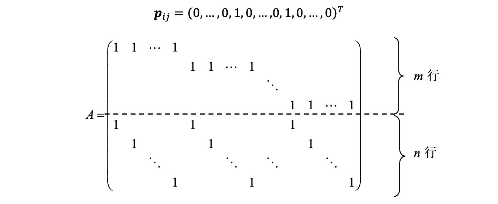
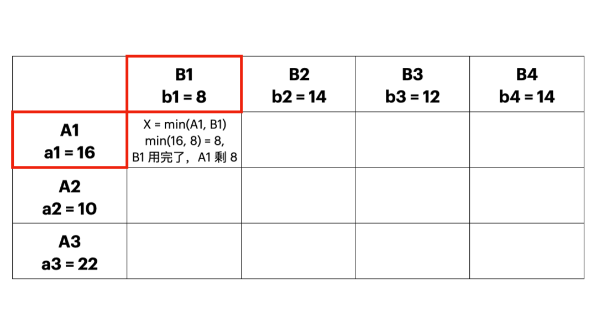
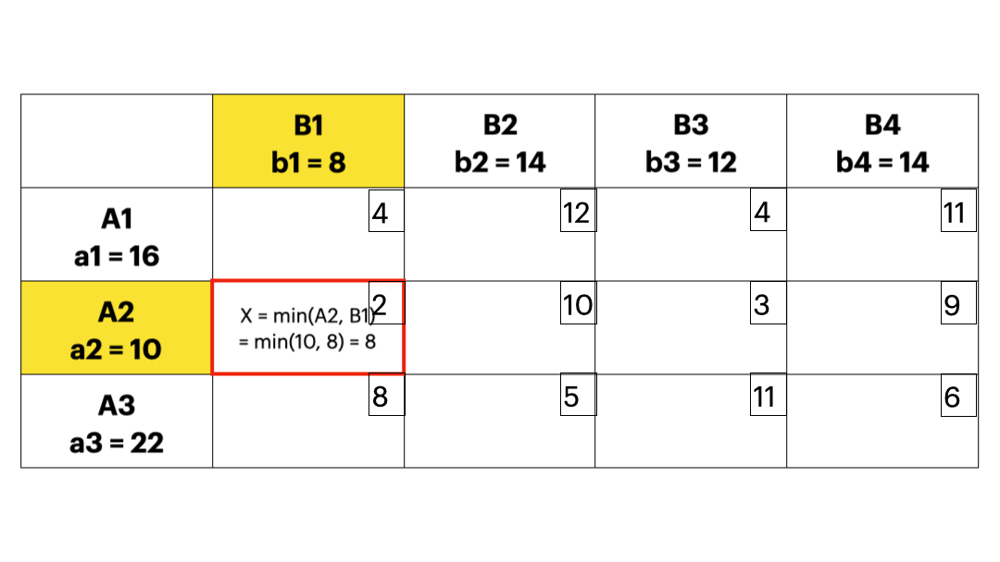
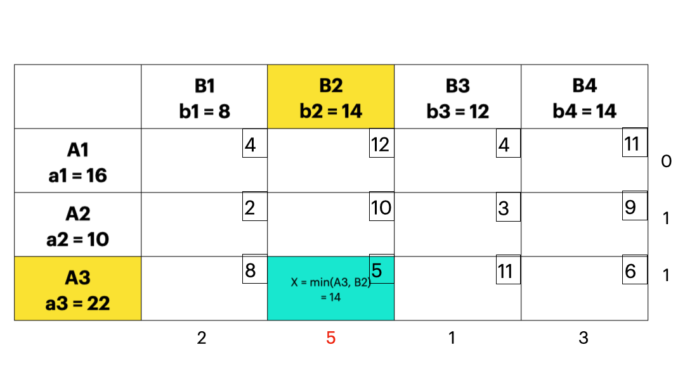
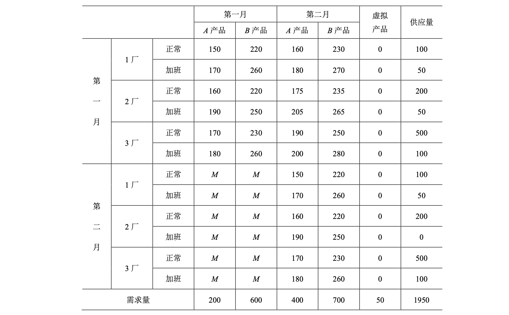
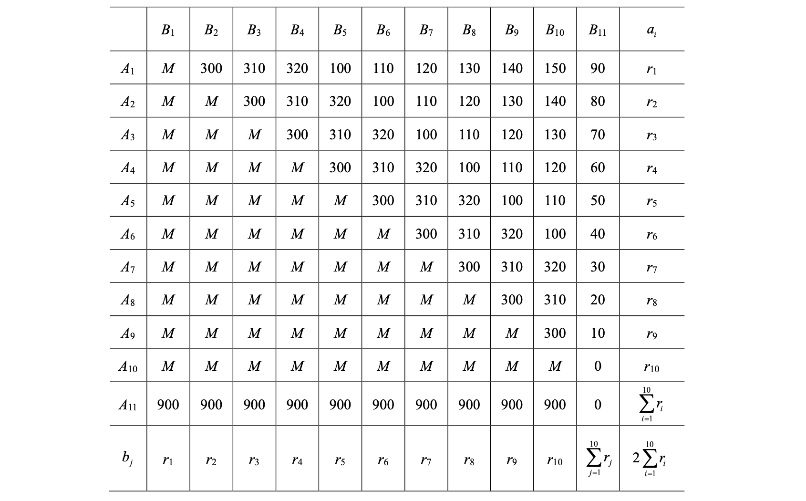

线性规划的扩展¶
这一章是有关线性规划的一些拓展，比如运输问题等。
运输问题(Transportation Problem)：¶
- 研究如何统筹安排人和物在不同的时间和空间节点之间的流动，使得这种流动产生的总费用最少，或者考虑销售收入和生产成本等支出后的总利润最大的问题。
一般模型：¶
每个产地的供应量和每个销地的需求量已知，并且知道各地之间的运输单价的前提下， 把某种产品从多个产地调运到多个销地，如何==确定每条运输线路上的运量使得总的运输费用最小== 。
一般性描述：某种物资有\(m\)个产地，\(A_1, A_2,...,A_m\)，每个产地提供的物资供给量是\(a_1,a_2,...,a_m\)，有\(n\)个销地\(B_1, B_2,...,B_m\)，每个销地的物资需求是\(b_1,b_2,...,b_n\)，将物资从 \(A_i\) 运到\(B_j\)的运输费用的单价是\(c_{ij}\), \(i = 1,2,...,m, j = 1,2,...,n\)，目标是制定一个运输方案，使得在充分满足各个销地的需求条件下总运费最小。
- 从描述中，可以归纳出3个约束： 产地约束； 销地约束； 非负约束 。
如果供给等于需求：
如果供给大于需求：
可以通过在产地约束上加入==虚拟销地==转化为标准形。运到虚拟销地的运输费用为0。
如果供给小于需求：
可以通过在销地约束上加入==虚拟产地==转化为标准形，虚拟产地的运输费用为0。
我们可以发现，供求不平衡的运输问题都可以通过==加入虚拟产/销地==变成供求平衡的运输问题。所以，下面我们开始探讨供求平衡的运输问题的性质。
运输模型的性质¶
- 模型是个有 \(m \times n\) 个决策变量，\(m + n\) 个约束条件的线性规划问题，具有特殊的系数矩阵结构。
- 运输问题基变量的个数是 \(m + n - 1\)，前 \(m\) 行之和等于后 \(n\) 行之和，所以系数矩阵的秩 \(r(A) < m + n\)，这意味着任意 \(m + n\) 个决策变量的系数列向量都线性相关，\(r(A) = m + n - 1\)。如果可以找到 \(m + n - 1\) 个线性无关的系数矩阵的列向量，就可以得到一个相应的基本可行解。

举个例子。我们考虑标准形式。记 \(\sum^m_{i=1} a_i = \sum^n_{j=1} b_j = S\)。我们令 \(x_{ij} = \dfrac{a_i b_j}{S}\)。会发现所有约束同时能满足，并且 \(\dfrac{a_i b_j}{S} \geq 0\)。好了，这下我们找到了一个基本可行解。
- 如果运输问题的供给量 \(a_i(i = 1,2,..,m)\) 和需求量 \(b_j (j = 1,2,...,n)\) 都是整数，那么该问题的基本可行解均为整数解。这个性质表明，在运输问题中，可以不必考虑决策变量\(x_{ij}\)是否有整数约束，可用标准的线性规划方法求解。
Brief Intro
这是因为系数矩阵 \(A\) 是一个完全幺模矩阵 (Totally Unimodular Matrix)。它的所有的非零子式均为 \(\pm 1\)，也就是所有基矩阵的行列式都为 \(\pm 1\)。
幺模矩阵的一个重要性质就是，对于约束方程组 \(\bold{Ax} = \bold{b}\)，其所有的基本可行解都是整数。
运输问题一定存在最优解。
上面提到，运输问题一定可以找到一个基本可行解。而这个最小化问题很明显是有下界的（目标函数不可能 < 0），所以至少 0 是问题的下界。
可以概括为：运输费用最小化问题，是有下界的线性规划问题。可以根据 各地需求分配各产地向各销地的运量，构造出可行解。对于有界且有可行解的线性规划问题一定有最优解。
基本定理¶
- 闭回路：凡是能排列成\(x_{i_1 j_1}, x_{i_1 j_2}, x_{i_2 j_2},..., x_{i_s j_s}, x_{i_s j_1}\)形式的变量集合称为一个闭回路。该集合中的变量称为这个闭回路的顶点。
- 性质：构成闭回路的变量组对应的列向量组一定线性相关；
- 性质：如果变量组中有一个部分组构成闭回路，那么对应的列向量组是线性相关的；
- 推论：如果变量组对应的列向量组线性无关，那么该变量组一定不包括闭回路。
- Def. 3.2 如果变量组中若有某个变量\(x_{ij}\)是它所在的行、列中唯一属于改变量组的变量，那么\(x_{ij}\)称作该变量组的一个孤立点。
- 定理 3.1 变量组\(x_{i_1 j_1}, x_{i_2 j_2}, ..., x_{i_s j_s}\)对应的列向量组线性无关的充要条件是该变量组中不包含任何闭回路。
- 推论：平衡的运输问题中一组 \(m + n - 1\)个变量能够成基变量的充要条件是它不包含任何闭回路。
3.1.2 运输问题的表上作业法¶
表上作业法，也就是运输单纯形法(Transportation Simplex Method)，根据运输问题的特殊结构进行优化的单纯形法，可以显著提高解题效率。
这一部分比较国内应试向，纯手算。
确定初始基本可行解的方法¶
- 西北角法
- 从运价表的左上角开始==分配运输量==，让左上角尽可能取尽可能大的数（在满足产销约束的情况下），持续分配（每次删除一列或者一行），直到产品运输完毕，这样所有取了非0数的都是基变量。这种方法不需要考虑运输成本，只需要知道供需就可以计算了。所以劣势也很明显：这个初始解的质量不高。

- 最小元素法
- 每次优先考虑单位运价最小的运输业务，最大限度满足其运输量，直到把产销约束量分配完毕，这样就可以使得初始的可行解尽可能地“好”；下图实例中，每个方格中的小数字表示 \(c_{ij}\)，也就是运输成本。

- 伏格尔法
- 对每个产地和销地，计算它到各个产地或者销地的最小单位运价和次小单位运价，称这两个单位运价之差为罚数，如果罚数不大，不能按最小单位运价安排时造成的运费损失不大；反之如果罚数很大，不按最小单位运输会有很大损失，应该尽量按照最小单位运价运输，所以应该优先满足罚数较大的。

最优性检验的方法¶
- 闭回路法
- 一个非基变量变化，同行同列的基变量会发生改变，遇到空格就继续，遇到数字（基变量）就拐弯。奇数编号对应的单位运价之和减去偶数编号对应的单位运价之和，就是总运费的变动情况，也就是检验数，找负的里面最小的；，怎么确定入基的，就是相应回路里最快降低为0的基变量。得到新的表后，继续闭回路检验，知道所有的检验数都不小于0。P.S. 如果检验数等于0，那么有无数个最优解。
- 对偶变量法（位势法）
- 先写出对偶问题，原问题的每一个约束条件（产+销）都对应一个对偶变量（\(u,v\)分别代表产，销，数学意义就是从产地生产产品要花的钱，和在销地要花的钱），我们通过基变量（松、紧约束）求\(u,v\)（不妨先令\(u_1 = 0\)），通过\(u,v\)求非基变量的检验数（ \(\sigma = c_{ij} - u_i - v_j\) ），要把每一个非基变量的位势求出来，同样找到最小的负数。【这里补充一个重点！！】
- 改进运输方案
- 特殊情况的处理：
- 无穷多最优解
- 退化：
3.1.3 特殊的运输问题¶
需求可变的运输问题¶
前面实际包含了假设：各销地的需求是确定的，但是有可能物资调运系统需要统筹规划，和各个销地的代表磋商，确定销售地需要满足的最低需求（刚性需求）和所有销地最低需求下尽可能满足的最高需求。柔性需求定义为最高需求和最低需求之差。
（产销不确定的建模：有一部分是柔性的，看原来产量和硬性需求做差的结果，添加虚拟销地，一方面保持硬性需求（这些需求不能运到虚拟销售地，用罚因子替代），另一方面虚拟产地运到虚拟销地）
转运问题¶
前面的模型中线路直接将产地和销地相连，但是实际转运时候物资可能在既不是产地也不是销地的地点中转运输，此外，产地和销地也可能充当转运的作用。转运问题就是考虑这些特点的运输问题的扩充，它将运输问题中的节点分为产地（发点）和销地（收点）和转运点。其中任何节点都可以承担转运功能，发点的运出量 > 运入量，收点点的运入量 > 运出量，转运点的运入和运出量相等。因此转运问题的约束也就分为收点约束、发点约束和转运点约束。
典型的转运问题：发点的供应和收点的需求一定，个线路的运输单价已知的情况下考虑如何调运使得总运输费用最小的问题。
Tips
产地、销地一视同仁，但是产地的发送量 = 产量 + 总量；
销地的接受量 = 总量 + 接受量；产地的接受量 = 总量，
【补一个模型和例题】
运输问题的几种可能的变化¶
一般而言，运输问题会有多种可能的变化。 1. 供需不平衡的转运问题 2. 最大化目标函数 3. 有不可接受或者破坏的路线 4. 有线路最小运量或者容量的限制
3.1.4 应用举例¶
投标裁决问题：略过。
生产排程问题¶
要点：有不可接受的‘运输’路线、供需不平衡
某数码产品制造公司有 3 个工厂，生产 A、B 两种数码产品。生产方式分为正常生产和加班生产两种，加班生产成本大于正常生产成本。
现要制定两个月的工作计划：第一月 A、 B 产品的需求量分别为 200 和 600 件，第二月 A、 B 产品的需求量分别为 400 和 700 件。各厂生产 A 和 B 产品所需时间、可用时间数据在下面给出。设两种产品的单位制造时间都为 1 小时。如果在第一月生产第二月的产品，则需存放一个月，3 个工厂的保管费分别为 10，15 和 20 元 / (件 *月)。试拟定生产计划，使总成本最低。
| 各厂生产方式 | A单位生产成本 | B单位生产成本 | 第一月可用时间 | 第二月可用时间 |
|---|---|---|---|---|
| 1 厂正常生产 | 150 | 220 | 100 | 100 |
| 1 厂加班生产 | 170 | 260 | 50 | 50 |
| 2 厂正常生产 | 160 | 220 | 200 | 200 |
| 2 厂加班生产 | 190 | 250 | 50 | 0 |
| 3 厂正常生产 | 170 | 230 | 500 | 500 |
| 3 厂加班生产 | 180 | 260 | 100 | 100 |
解：
这个问题可以建模成运输问题。题意描述可知，每个月每个厂，用各种生产方式生产的各种产品是有数量上限的。这个可以视为供给量。
整个问题就是：如何协调供给量（规定每个厂每个月用什么生产方式生产多少个A/B产品）以应付需求的过程，和运输问题是完全类似的。
想象一下运输问题的那个表格。我们可以写出如下的表格出来：

注意，标大M的表示这种生产方案是不可行的。不可能在2月份生产1月份的需求。所以这部分是取不到的。但是1月份可以正常/加班生产1月份的，也可以生产二月份的，不过除了正常生产的费用外还多一个保管的费用。
机场转机问题（与整数规划部分建模重复，略过）。
供给计划问题¶
在某个建筑工程的施工中有一种设备容易损坏，因此 X 公司专门设立了一个设备供给处负责工程施工期间对这种设备的补给。供给处有三种途径来满足工程施工对该设备的需求。
- 第一条途径是利用自己的一个修理车间对该设备进行公司内部的维修。内部维修该设备的修理时间为 4 周，每台所需费用为 100 元。
- 第二条途径是外送维修，即将设备送到专门的设备维修公司进行修理。修理时间为 1 周，但每台费用为 300 元。
- 第三条途径是购买新设备。每台新设备的价格为 900 元。
已知供给处需租用仓库存放已修、待修或报废的设备， 每台每周的存贮费为 10 元。报废的设备存储在仓库中等工程完工时统一处理。假设每周末 X 公司工程处将损坏设备送到供给处并领走相同数量的好设备。预计该工程可在 n 周完工（为简化取 \(n\) =10）。请你为供给处设计一个合理的供给计划，要求在绝对保证工程需要的条件下，能使得供给处所花费的总费用最少。
解：
整个问题其实隐含一个细节。每周拿过来需要维修几台机器，同一周供应商就需要给几台机器过去，而为了成本最小，我们肯定不会多制造机器留在仓库里。
所以，我们在整个周期里，报废了多少台机器，（也就是选择途径三，也就是到最后一刻“留着产生贮存费用的机器数”），也就意味着我们在整个周期里重买了多少台机器。

内容待补充
3.1.5 运输问题的管理学案例¶
-
新美公司的分销系统再造
-
竞标价格的制定